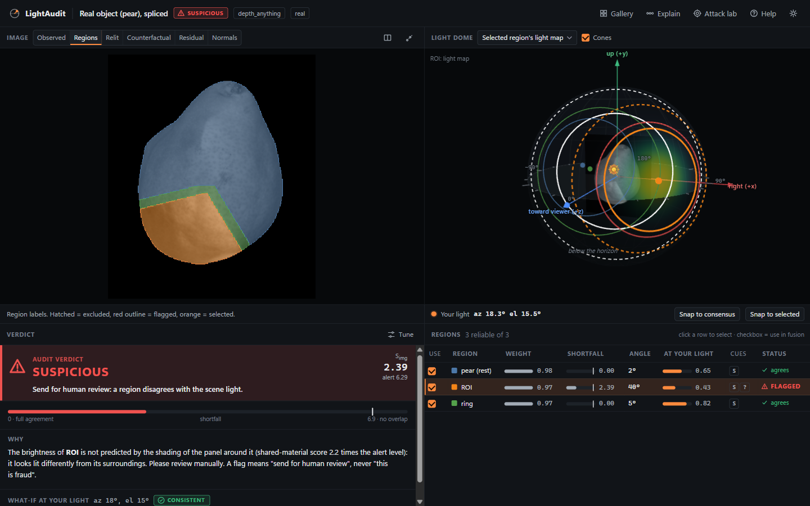
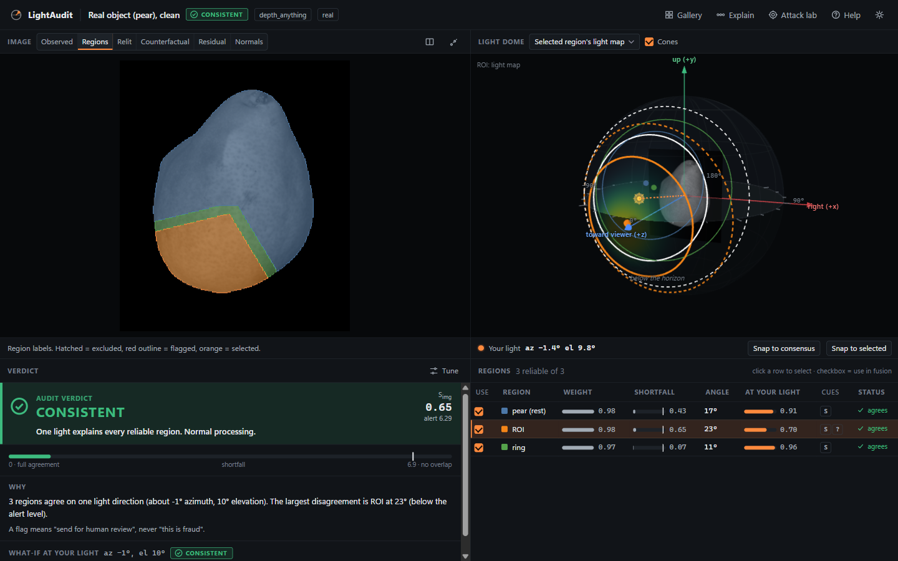
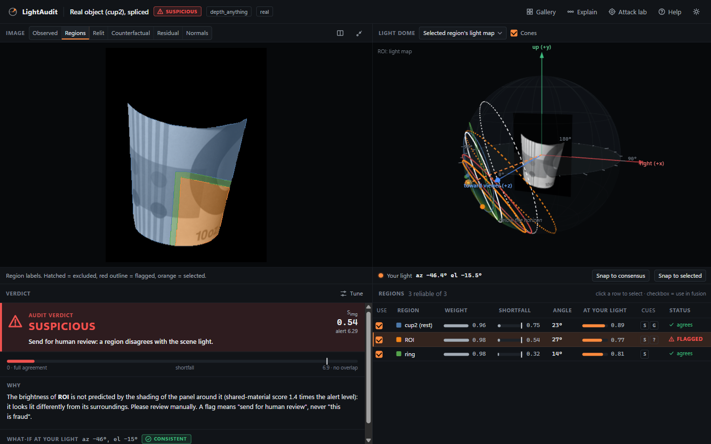
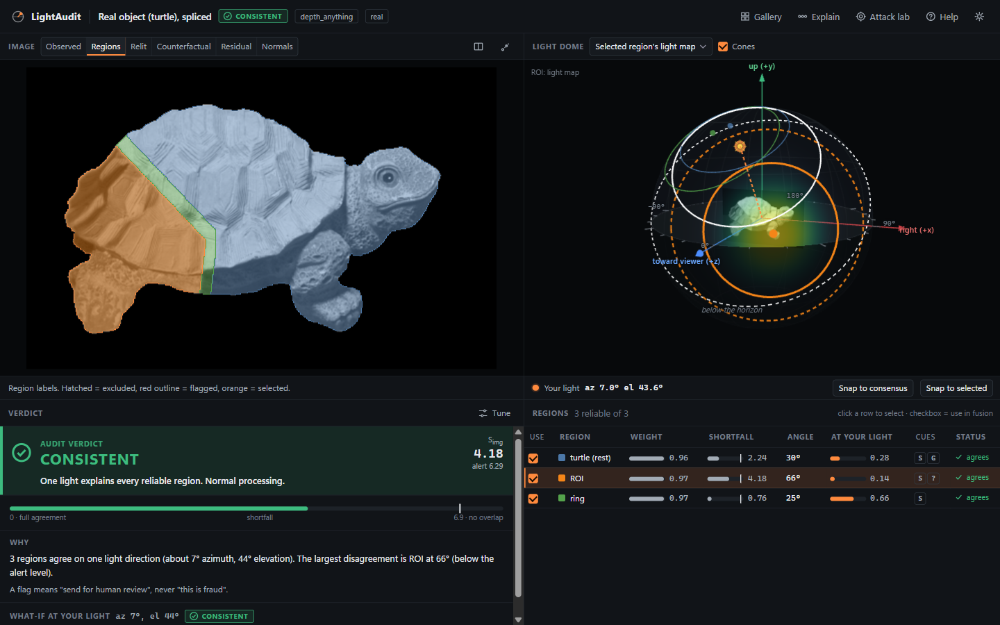
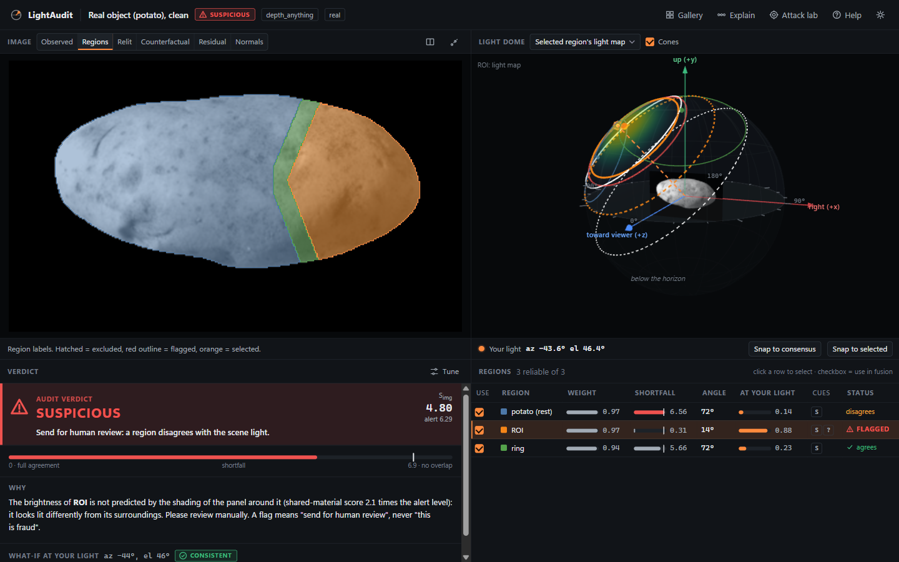
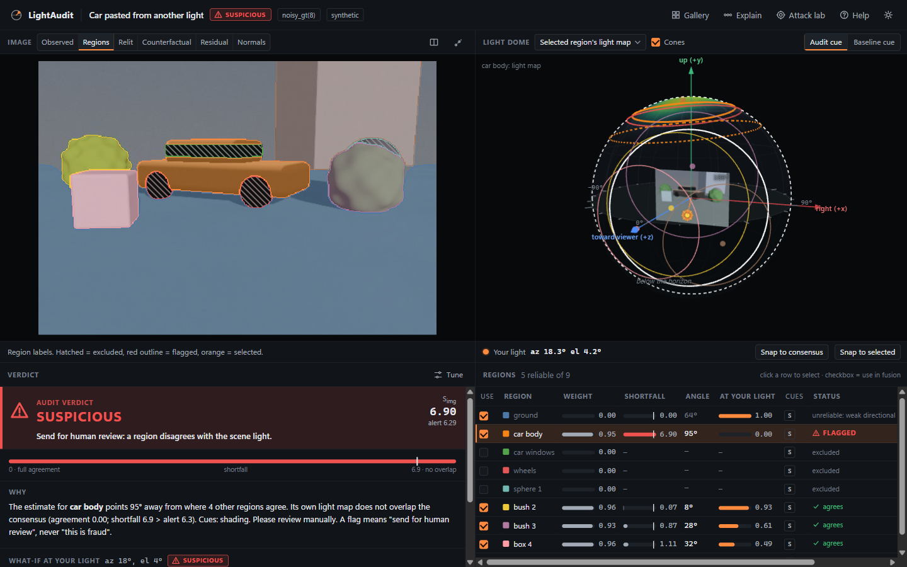
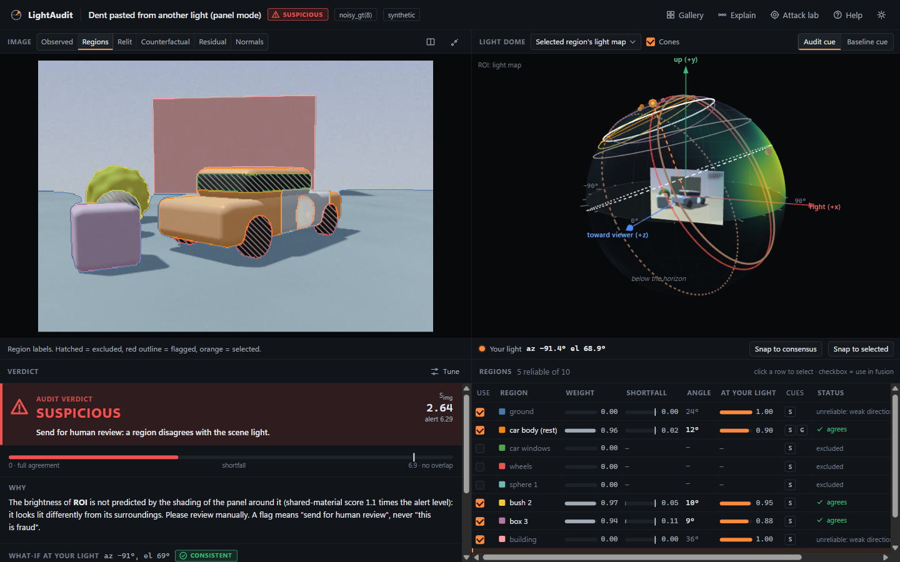
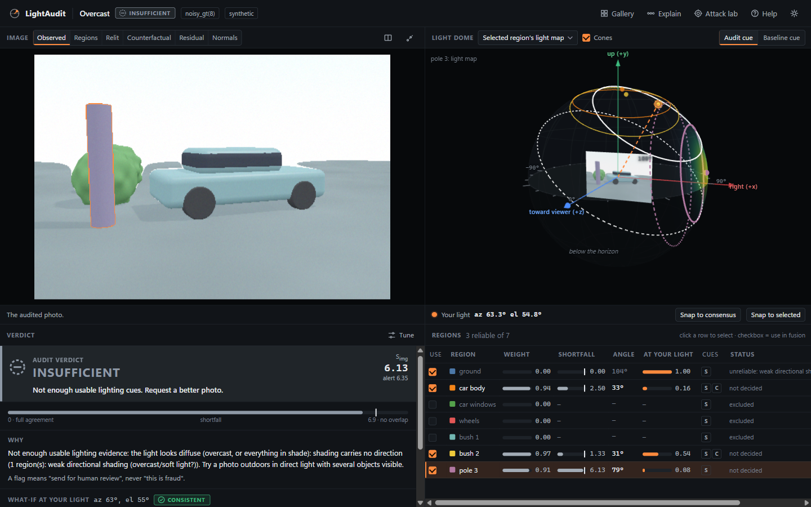
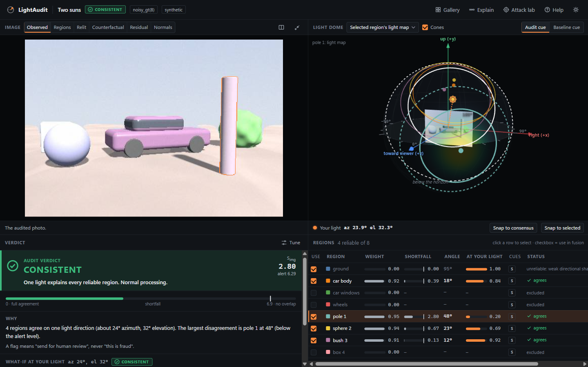

| Capability | Data | Result | Verdict |
|---|---|---|---|
| Dent / marked-area check | Real objects, held out (400 clean, 400 spliced) | 5.2% false alarms, 45% caught; 57% at ≥80° | works |
| Dent / marked-area check, strict setting | same | 2.2% false alarms, 34% caught; 51% at ≥80° | works |
| Dent check after colour matching, real | 400 real splices | 32% caught at 5.2% false alarms (previous version: 20%) | partly |
| Dent check, other half of the objects as test | 400 clean, 400 spliced | 10% false alarms, 52% caught, 33% after colour matching | threshold transfers unevenly |
| Dent check on synthetic scenes | 8 pasted dents, 15 clean | 5 of 8 caught (62%); 4 of 15 false alarms (27%) | partly |
| Dent check after a re-shade attack | 8 synthetic | 6 of 8 still caught (75%) | holds |
| Dent check after colour matching, synthetic | 8 synthetic | 0 of 8 caught | defeated |
| Abstaining under overcast light | 5 synthetic scenes | 4 of 5 return INSUFFICIENT (was 0 of 5) | works |
| Clean sunny scenes left alone | 5 synthetic | 0 of 5 flagged | works |
| Whole object pasted, synthetic, 90° | 5 scenes / 8 scenes | 4 of 5 and 6 of 8 caught; AUC 0.65 over all angles ≥30° (n=15) | partly |
| Whole object pasted, then re-shaded | 8 synthetic cars | 0 of 8 caught | defeated |
| Whole object pasted, real indoor scenes | 6 scenes, 150 clean, ~1,400 simulated splices | AUC 0.49–0.59 (0.64 at ≥90°) | does not work |
| Unedited outdoor photos | 6 photos | 4 of 6 wrongly flagged | does not work |
| Two-sun scenes recognised | 5 synthetic | 3 of 5 CONFLICT, 2 of 5 abstain, none called consistent (before: 3 of 5 called consistent) | works |
| Low-resolution images | 5 synthetic | 1 of 5 splices caught, 3 of 5 not decided | weak |
| Viewer, server, upload, tests | 62 Python tests, 470 browser-parity checks | all pass | works |
AUC: 0.5 is chance, 1.0 is perfect. "Caught" means the verdict is SUSPICIOUS at the calibrated alert level.
You mark an area of an object (for example a dent on a car door). The tool asks: is this area lit like the surface around it? It fits one shading model (light direction, brightness, ambient) to the surrounding surface and runs two tests on the marked area. Material test: that same model must predict the area's brightness. Light test: the area must follow the same light direction, with its own brightness level, so matching the colour or brightness of a pasted area cannot hide it. Painted patterns are removed first with Retinex, with one rule added: a brightness step in a 3-pixel band around the boundary of the marked area is never treated as paint. Without that rule Retinex explains a pasted area's brightness as paint and hides it.
Ten objects calibrate the alert level, the other ten are the test. A splice is one part of an object taken from a photo of the same object under another lamp, blended at the edge, saved as 8-bit.
| Lighting difference | Caught at 5.2% false alarms | Caught at 2.2% false alarms | Splices |
|---|---|---|---|
| 0–25° | 36% | 27% | 67 |
| 25–50° | 41% | 27% | 143 |
| 50–80° | 47% | 36% | 120 |
| 80° and above | 57% | 51% | 70 |
| All | 45% | 34% | 400 |
By test object (false alarms / caught, at the 5.2% setting): pear 15% / 85%, cup 17% / 78%, potato 3% / 57%, turtle 0% / 50%, paper 3% / 45%, teabag 7% / 40%, dinosaur 5% / 25%, squirrel 0% / 25%, box 3% / 23%, frog 0% / 23%.
Which pair of tests to use was decided on the same 400 clean and 400 spliced images, with and without colour matching of the pasted area, at matched false-alarm rates:
| Tests used | False alarms | Plain splices caught | Colour-matched splices caught |
|---|---|---|---|
| Material test with and without Retinex (previous version) | 6.5% | 41% | 20% |
| Material test + light test, both with Retinex (current) | 5.2% | 45% | 32% |
| Current pair, calibrated on the other half of the objects | 10.2% | 52% | 33% |
| Previous version, calibrated on the other half | 10.5% | 46% | 27% |
The last two rows show a weakness: thresholds learned on one half of the objects give 5% false alarms on the other half in one direction and 10–19% in the other. Ten objects are too few to calibrate reliably.
How the method got there, on the same data with hard-edged splices (AUC):
| Variant | AUC |
|---|---|
| Compare light directions of the parts | 0.59–0.65 |
| Shared shading model, no paint removal | 0.74 |
| Shared model + Retinex on the composite | 0.66 |
| Shared model + boundary-guarded Retinex | 0.86 (0.91 at ≥80°) |
| Shared model + the true colour map (reference) | 0.84 |





Six real demo pairs are in the gallery (real_mit_*): 5 of 6 clean images are left alone; of the 6
spliced ones 3 are flagged (cup, pear, frog), 1 returns CONFLICT and 2 are missed (turtle, box).




Two-sun check. A flat surface has one orientation, so its brightness changes only through cast shadows. With one sun the shadows share one darkness level; with two suns each object casts two half-shadows at different levels. If too many shadow pixels on a large flat region sit above the darkest level, the verdict is CONFLICT. The threshold is set so that about 4% of one-sun calibration scenes trip it (8 of 190).
| Measure | Result |
|---|---|
| Light-direction error per region, exact surface directions | least squares 6–8°, rank cue 22–26° (median) |
| Calibration: true light inside the 68% / 95% region | 64% / 89% on test scenes |
| Pasted car, AUC for differences ≥30° (n = 15) | 0.65 (rank-cue baseline 0.57) |
| Pasted car at 90°, caught at 5% false alarms | 60% (range 33–87%) |
| Smallest difference with half of the cars caught | 60–90° |
| Clean calibration scenes with no decision (INSUFFICIENT or CONFLICT) | 19.5% of 200 (about 4% from the two-sun check, about 5% from the overcast check, by design) |
| Attack (8 cases each) | Pasted car caught | Pasted object caught | Pasted dent caught |
|---|---|---|---|
| None | 75% | 62% | 62% |
| Colour matching | 88% | 71% | 0% |
| Re-shade with the exact scene light | 0% | 14% | 75% |
| Re-shade with a 20° error | 0% | 14% | 75% |
| Adaptive attack | 0% | 14% | 75% |
The two checks fail in opposite ways: re-shading defeats the whole-object check but not the dent check; colour matching defeats the dent check on these shallow synthetic dents (0 of 8) but only partly on real curved objects (32% still caught).
| Finding | Evidence |
|---|---|
| The light estimator itself is right | With a gray ball's true shape the estimate is within 1–3° of the true light in 6 real scenes |
| Predicted surface directions are the weak link | On the same ball: DSINE 17–22° light error in 4 scenes, 57° and 82° in 2; Depth Anything 11–27° |
| A bug made it worse, now fixed | DSINE's left-right axis was mirrored: 46° error on the ball as delivered, 18–25° after the fix |
| Most real regions are flat | Books, tables, walls have one orientation each and an unknown colour, so they say nothing about the light |
| False alarms grow with the number of regions | Score correlates 0.43 with region count; a per-region likelihood test with Holm correction brings it to 0.09 (in the benchmark, not yet in the pipeline) |
| Averaging two surface models does not help | Light error on synthetic scenes: DSINE 21°, average 27°, Depth Anything 37° |
git clone https://github.com/Barath-BDK/LightAudit cd LightAudit Set-ExecutionPolicy -Scope Process Bypass .\setup.ps1 .\.venv\Scripts\python.exe -m lightaudit.cli serve # then open http://127.0.0.1:8000
| What | Command (prefix with .\.venv\Scripts\python.exe) |
|---|---|
| Check a marked area in your photo | -m lightaudit.cli audit --image photo.jpg --roi mask.png --html |
| Real-object benchmark (downloads nothing by itself) | eval/mit_panel.py (data: MIT Intrinsic Images into data/mit_intrinsic/) |
| Real-object demos for the viewer | tools/make_mit_demo.py |
| Synthetic evaluation, figures, report | -m lightaudit.cli eval --suite quick, then figures, report |
| Tests | -m pytest |
| # | Step | Why |
|---|---|---|
| 1 | Test the marked-area check on real car photos with real dents, clean and edited | The real test so far uses tabletop objects; genuine damage with scratches or dirt may raise false alarms |
| 2 | Calibrate the marked-area check on more real objects | With ten objects the false-alarm rate swings between 5% and 19% depending on which half calibrates |
| 3 | Test the two-sun check on real photos | It needs a large flat surface; road markings or stains could look like a second shadow level |
| 4 | Move the per-region likelihood test with Holm correction into the whole-object check | Removes the growth of false alarms with region count |
| 5 | Run the full synthetic evaluation | Narrow the ranges; every synthetic number here is from the quick suite |
| 6 | Present the whole-object check as "necessary, not sufficient" | It is at chance on real photos and re-shading defeats it; that is a finding to report, not to hide |
Limits to keep in mind: the real-photo result is for areas of one object with a known boundary; the alert level for real photos was calibrated on ten tabletop objects; angles in the real test are approximate. A flag means "send for human review", never "this is fraud".